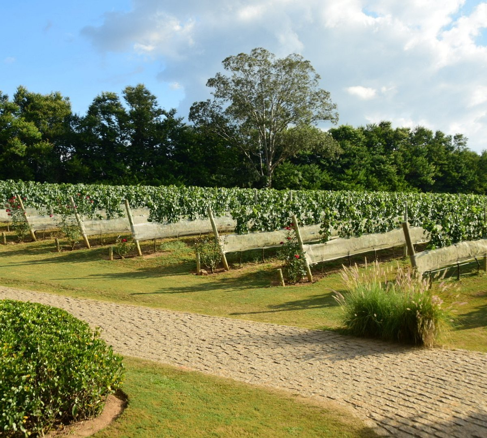
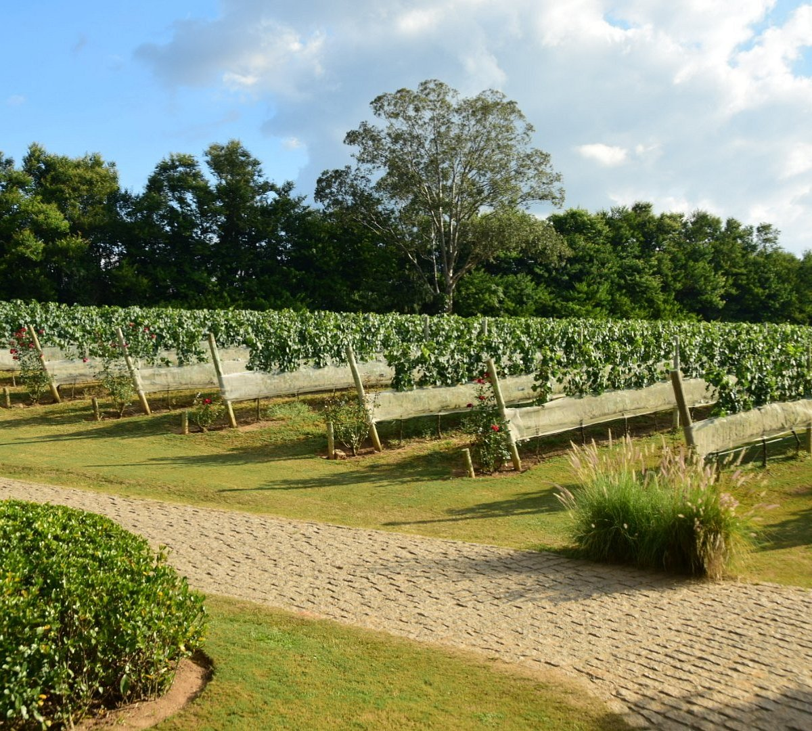

Propósito:
"Se todos que nos rodeiam abraçarem esse sonho, se o nosso vinho reunir as pessoas e
ainda se conseguirmos retribuir à região tudo o que ela nos proporciona, então teremos
plantado a semente para que as próximas gerações tenham uma nova visão sobre a região
de Espírito Santo do Pinhal e sobre o vinho brasileiro."
"Familia guaspari"
Hoje em dia, a vinícola possui mais de 60 hectares de solo plantado nas terras altas de Pinhal e produz um dos melhores
vinhos do Brasil. Voçe pode visitar e ainda fazer ate piquenique dentro dos vinhedos!
Fique com algumas imagens:

 
